Свойства flex-контейнера
flex-direction
Это свойство указывает, как flex-элементы располагаются во flex-контейнере, задавая направление главной оси flex-контейнера. Элементы могут располагаться по двум основным направлениям — как строки по горизонтали или как столбцы по вертикали.
Значения
row
Со значением row flex-элементы располагаются в ряд слева направо в контексте ltr.
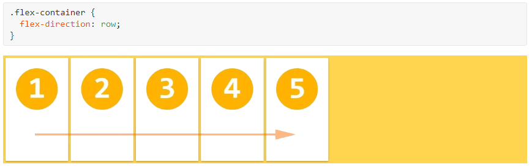
row-reverse
При значении row-reverse flex-элементы располагаются в ряд справа налево в контексте ltr.
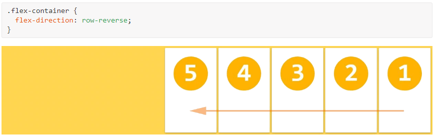
column
Со значением column flex-элементы располагаются в колонку сверху вниз.
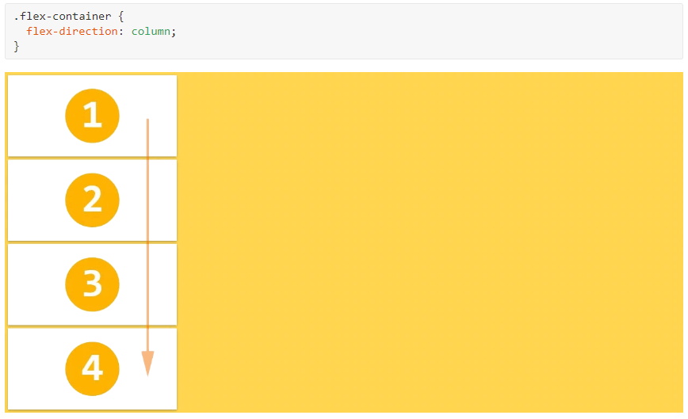
column-reverse
При значении ccolumn-reverse flex-элементы располагаются в колонку снизу вверх.
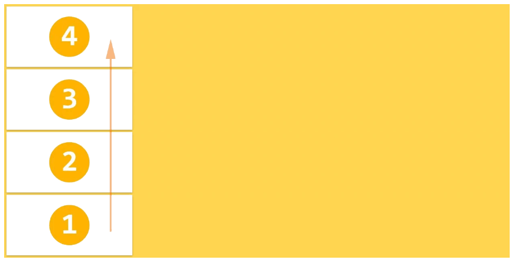
Значение по умолчанию: row
row и row-reverse зависят от режима написания, так что в контексте rtl они будут соответственно перевёрнуты.
flex-wrap
Исходная концепция flexbox — это контейнер для установки своих элементов в одну строку. Если flex-контейнер располагает свои элементы в одну или несколько строк, то свойство flex-wrap управляет направлением, в котором эти новые строки располагаются.
Значения
nowrap
flex-элементы отображаются в одну строку, по умолчанию они уменьшаются, чтобы соответствовать ширине flex-контейнера.
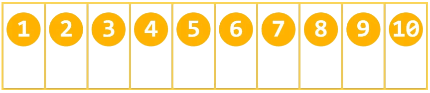
wrap
flex-элементы отображаются в несколько строк, если это необходимо, слева направо и сверху вниз.
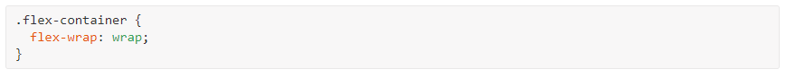
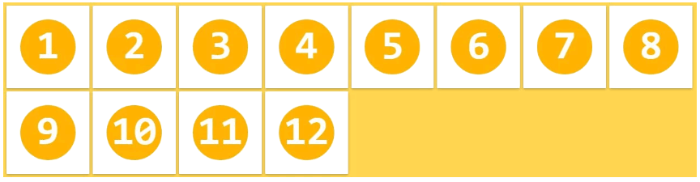
wrap-reverse
flex-элементы отображаются в несколько строк, если это необходимо, слева направо и снизу вверх.
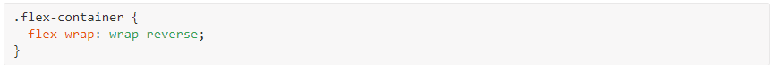
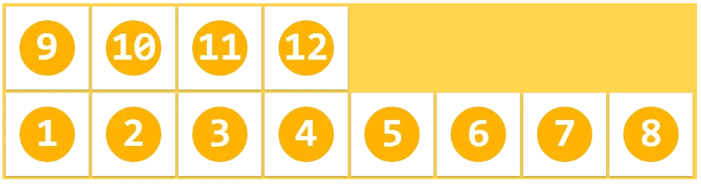
Значение по умолчанию: nowrap
Эти свойства зависят от режима написания, поэтому в контексте rtl они будут соответственно перевёрнуты.
flex-flow
Это свойство является сокращением для установки свойств flex-direction и flex-wrap.
Значения
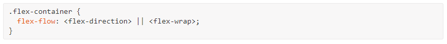
Значение по умолчанию: row nowrap
justify-content
Свойство justify-content выравнивает flex-элементы вдоль главной оси текущей строки flex-контейнера. Свойство помогает распределять оставшееся свободное пространство, когда все flex-элементы в строке не растягиваются или растягиваются, но достигли максимального размера.
Значения
flex-start
flex-элементы выравниваются по левой стороне flex-контейнера в контексте ltr.
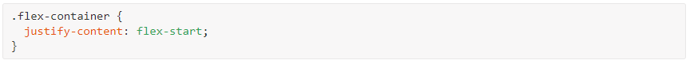
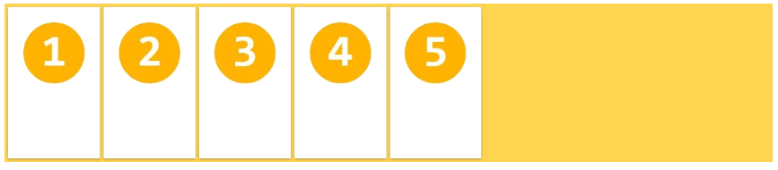
flex-end
flex-элементы выравниваются по правой стороне flex-контейнера в контексте ltr.
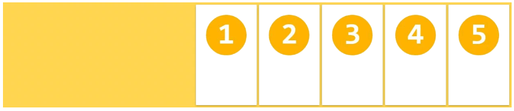
center
flex-элементы выравниваются по центру flex-контейнера.
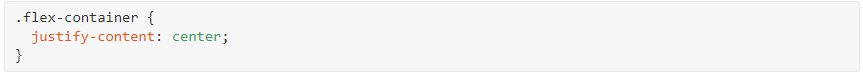
space-between
flex-элементы отображаются с равным интервалом между ними, первый и последний flex-элементы выравниваются по краям flex-контейнера.
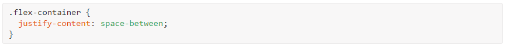
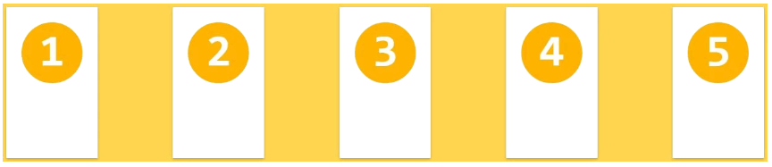
space-around
flex-элементы отображаются с равным интервалом вокруг каждого flex-элемента, включая первый и последний.
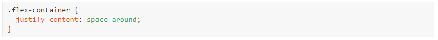
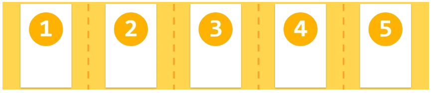
Значение по умолчанию: flex-start
align-items
flex-элементы могут быть выровнены по поперечной оси текущей строки flex-контейнера, подобно justify-content, но в перпендикулярном направлении. Это свойство устанавливает выравнивание по умолчанию для всех flex-элементов, включая анонимных.
Значения
stretch
flex-элементы заполняют всю высоту (или ширину) от поперечного начала до поперечного конца flex-контейнера.
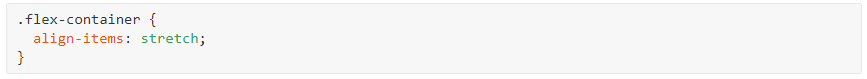
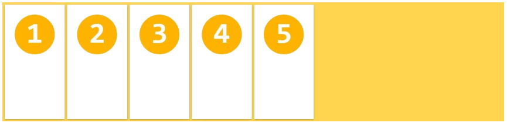
flex-start
flex-элементы располагаются у поперечного начала flex-контейнера.
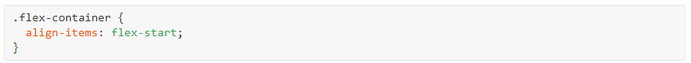
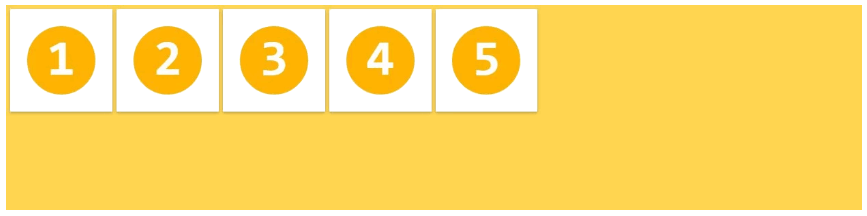
flex-end
flex-элементы располагаются у поперечного конца flex-контейнера.
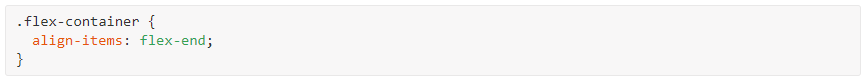
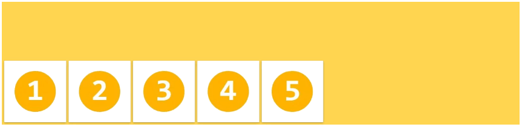
center
flex-элементы располагаются в центре поперечной оси flex-контейнера.
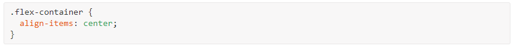
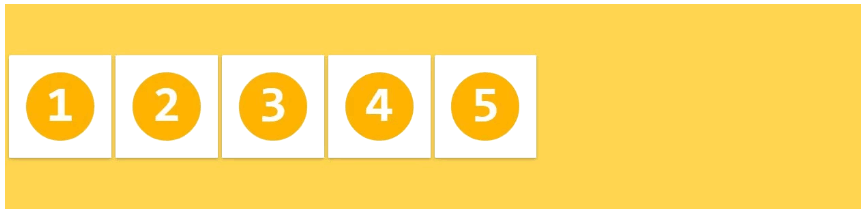
baseline
flex-элементы выравниваются таким образом, чтобы их базовые линии были выровнены.
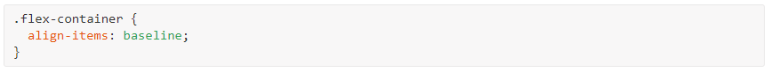
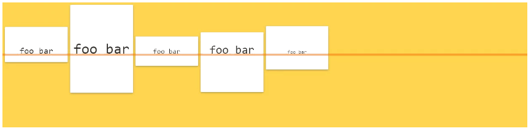
Значение по умолчанию: stretch
Подробнее о том, как рассчитываются базовые линии, читайте здесь.
align-content
Свойство align-content выравнивает строки внутри flex-контейнера, когда в поперечной оси имеется дополнительное пространство, подобно тому, как justify-content выравнивает отдельные элементы по главной оси.
Значения
stretch
flex-элементы отображаются с дополнительным пространством после каждой строки flex-элементов.
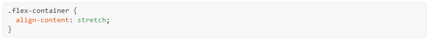
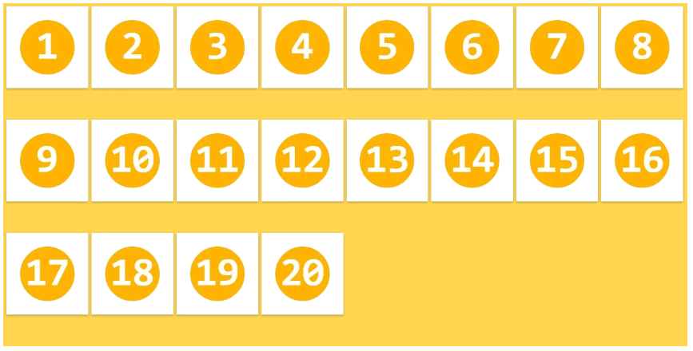
flex-start
flex-элементы располагаются стопкой возле поперечного начала flex-контейнера.
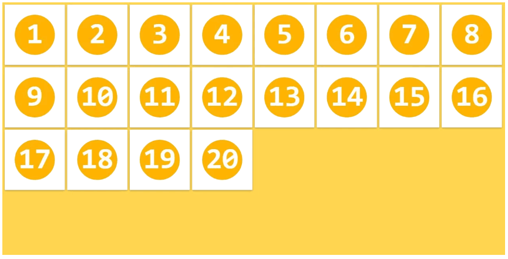
flex-end
flex-элементы располагаются стопкой возле поперечного конца flex-контейнера.
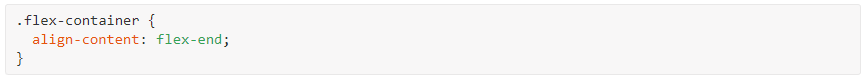
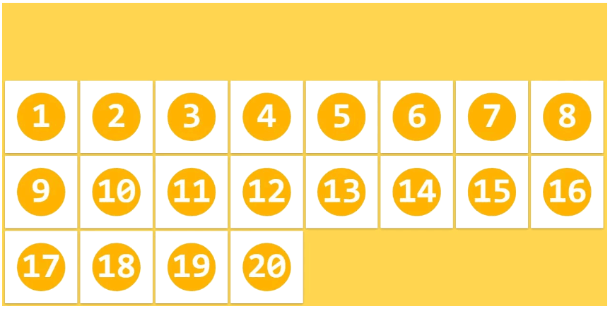
center
flex-элементы располагаются в центре поперечной оси flex-контейнера.
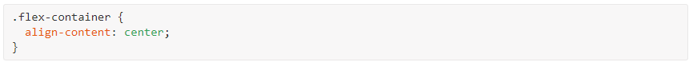
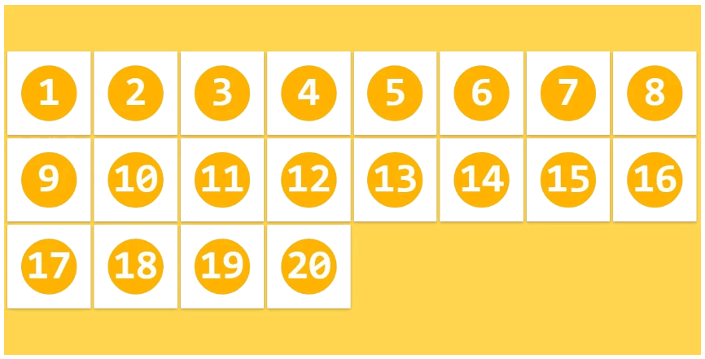
space-between
Строки flex-элементов отображаются с равным интервалом между ними, первая и последняя строки выравниваются по краям flex-контейнера.
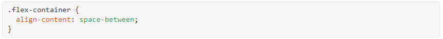
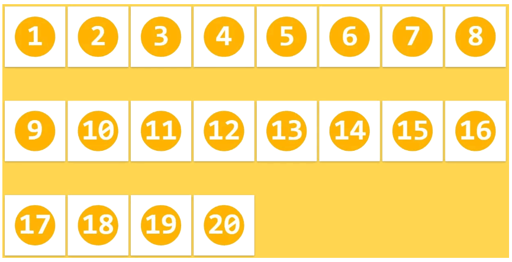
space-around
flex-элементы отображаются с равным интервалом вокруг каждой строки.
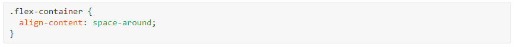
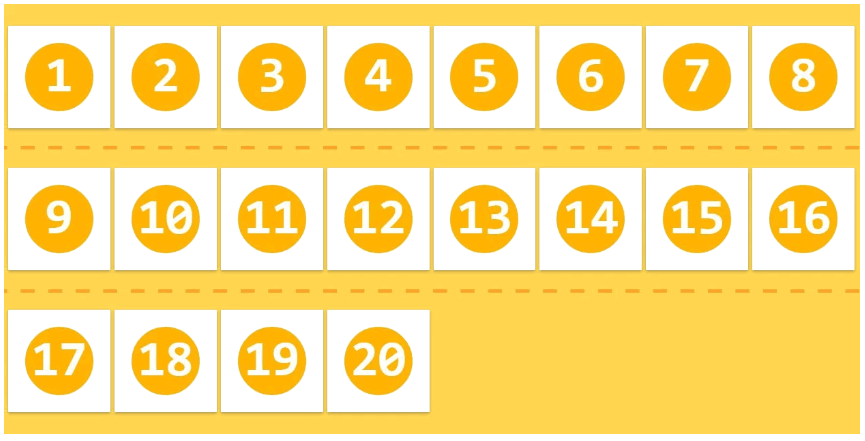
Значение по умолчанию: stretch
Это свойство имеет эффект только тогда, когда flex-контейнер содержит несколько строк flex-элементов. Если элементы располагаются в одну строку, свойство align-content никак не влияет на макет.
Замечания
- Все свойства column-* не оказывают влияния на flex-контейнер.
- Псевдоэлементы ::first-line и ::first-letter не применяются к flex-контейнерам.